Ujaval Gandhi
Ujaval GandhiCalculating Raster Area (QGIS3)¶
Many applications require quantifying the landuse patterns in a region. Land Use Land Cover (LULC) datasets come as raster files where each pixel is assigned a class value. GIS analysts often needs to generate reports based on this data by computing the area per class in a given region. QGIS comes with many built-in tools to calculate and summarize raster area.
توجه
Historically the suggested approach for calculating areas for rasters was to convert the raster to a vector layer and use vector area calculation techniques. This approach is quite computationally intensive and error-prone. The recommended approach is to use the processing tool Raster layer unique values report which can directly compute the pixel areas. If you have a layer with many polygons and need areas for each of them, you can use the Zonal histogram tool to get pixel counts for each class and then multiply it with the area of each pixel.
Overview of the task¶
We will be using a raster layer with 11 land cover classes and calculate the area of each class within a national park. We will also post-process the results to create a spreadsheet with class names and areas.
Other skills you will learn¶
How to apply symbology to a layer from a style file in the .qml format.
How to write expressions with multiple if/else conditions using the CASE statement.
How to export a QGIS table as an Excel spreadsheet.
Get the data¶
We will be downloading the following datasets
World Database on Protected Areas (WDPA): We will download the shapefile for the boundary of the Kaziranga National Park in India.
ESA WorldCover 2020: The European Space Agency (ESA) WorldCover 10 m 2020 product provides a global land cover map for 2020 at 10 m resolution. We will download the tile covering our region of interest.
Park Boundary¶
Go to the Protected Planet website, and click on the search toolbox. Search for
Kaziranga National Park.

The protected vector boundary will be shown as a search result. Click on it to view the page for the Kaziranga National Park.

This page will contain additional information like total area, created year, etc. Click on the Download and click the SHP to download the data in Shapefile format.

Two options for download will be prompted. Click continue under Non Commercial Use. Now a zip file containing the national park boundary will be downloaded.

Landcover Data¶
Go to the ESA WorldCover website and click on the DATA ACCESS menu.

Scroll down to the DATA DOWNLOAD section and click on the link to open the WorldCover viewer
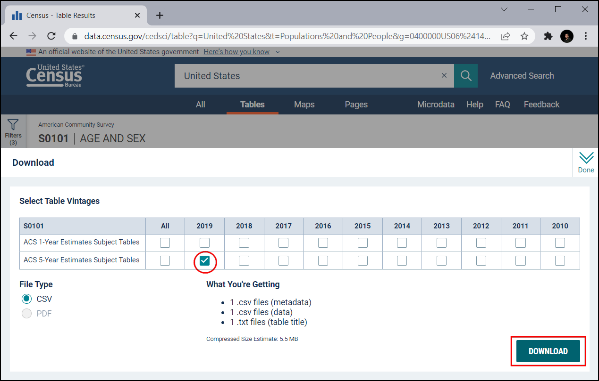
You need to create a free account to download the data. Click on the Register link on the top-right corner. Follow the instruction given to create a new account.

After creating the account, log in using the credentials. Our area of interest for this tutorial is the Kaziranga National Park. Zoom to the North-East India region. Once you are zoomed in enough, the landcover image tiles bounding box will start to appear.

Search and locate the
N24E093tile region.

Select the tile and click NEXT.

Click on the DOWNLOAD to download a zip file containing the landcover information in raster format. Make sure to select WorldCover Version 1 data for download.

We will also download a symbology file provided by ESA. Visit the ESA WorldCover Data Access page., Scroll-down to the Symbology section. Click on the QGIS to download the ESAWorldCover_ColorLegend.qml file which can be used to style the raster layer with approproate colors and class labels.

For convenience, you may directly download a copy of the datasets from the links below:
Kaziranga National Park Boundary WDPA_WDOECM_Apr2022_Public_10744_shp_0.zip
ESA WorldCover Tile N24E093 subset terrascope_download_20220422_114733.zip
ESA WorldCover QML Style file ESAWorldCover_ColorLegend.qml
Data Source [WDPA] [WorldCover]
Procedure¶
Unzip all the downloaded files. In the Browser, locate the folder containing the boundary file
WDPA_WDOECM_Apr2022_Publicc_10744_shp-polygons.shpand drag-and-drop it into the QGIS canvas.
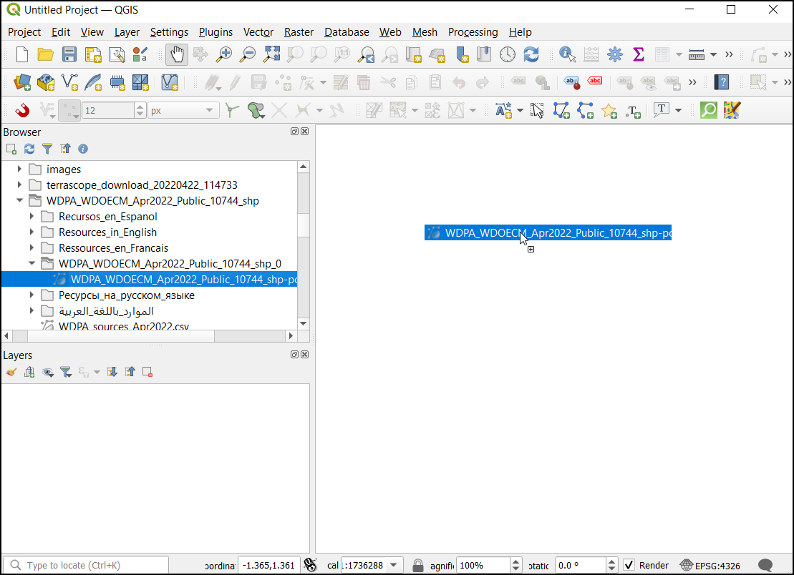
Now locate the worldcover raster tile
ESA_WorldCover_10m_2020_v100_N24_E093_Map.tifand drop it into the QGIS canvas.

You will now have both the vector boundary and landcover raster layer loaded in the Layers panel. Let's clip the landcover raster to the national park boundary. Go to to open Processing toolbox. Search for and locate the algorithm. Double-click to launch it.
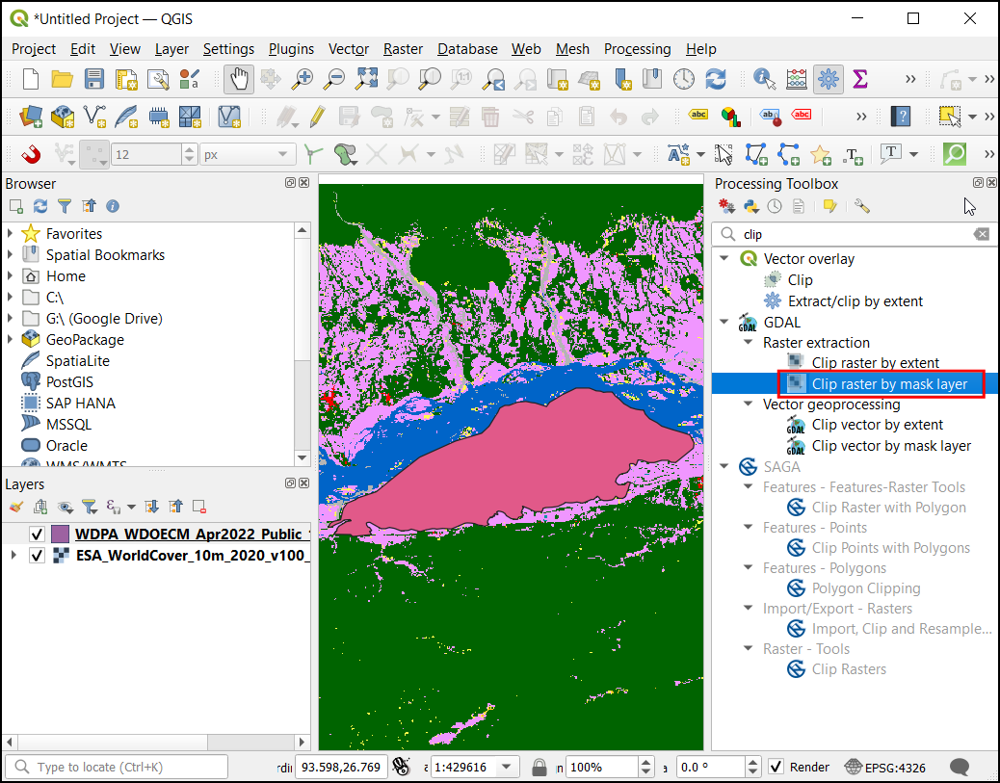
In the Clip Raster by Mask Layer dialog, choose the
ESA_WorldCover_10m_2020_v100_N24_E093_Maplayer as the Input layer andWDPA_WDOECM_Apr2022_Publicc_10744_shp-polygonslayer as Mask Layer. Enter-9999in Assign a specified nodata value to output bands section.

Now open the Advanced Parameters section and choose
High Compressionin Profile. Now under Clipped (mask), click on the...and select Save To File.... Enter the file name asworldcover_clipped.tif. Click Run.
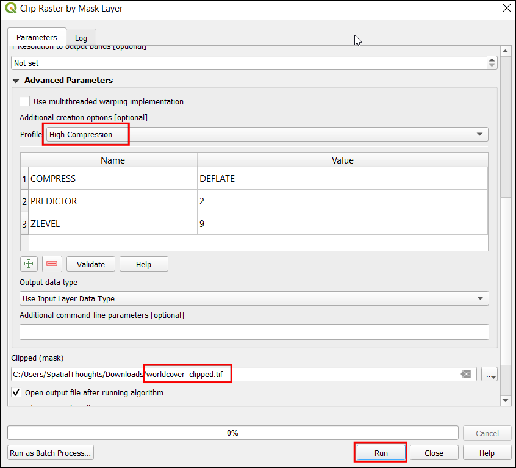
Now the
worldcover_clippedlayer will be loaded in the QGIS canvas. Right-click theESA_WorldCover_10m_2020_v100_N24_E093_Maplayer and select Remove Layer...

Both our layers come in the Geographic CRS
EPSG:4326. This CRS has units of degrees and is not suitable for calculating area. We must first reproject the layers to a Projected CRS. for regional analysis like these, UTM is a good choice for a projected CRS. We will reproject the layers to the CRS for the local UTM zone. Open the Processing toolbox and search for algorithm. Double-click to launch it.

In the Reproject Layer dialog, choose the
WDPA_WDOECM_Apr2022_Publicc_10744_shp-polygonslayer as the Input layer, click on the Select CRS button under Target CRS.

Our area of interest falls in the UTM Zone 46N. Search for 46 N and select the
WGS 84 / UTM zone 46NCRS.

توجه
To find out which UTM zone for your region, refer to the What UTM Zone am I in website.
In the Reprojected section, click
...and select Save To File.... Enter the name asnationalpark_reprojected.gpkg. Click Run.
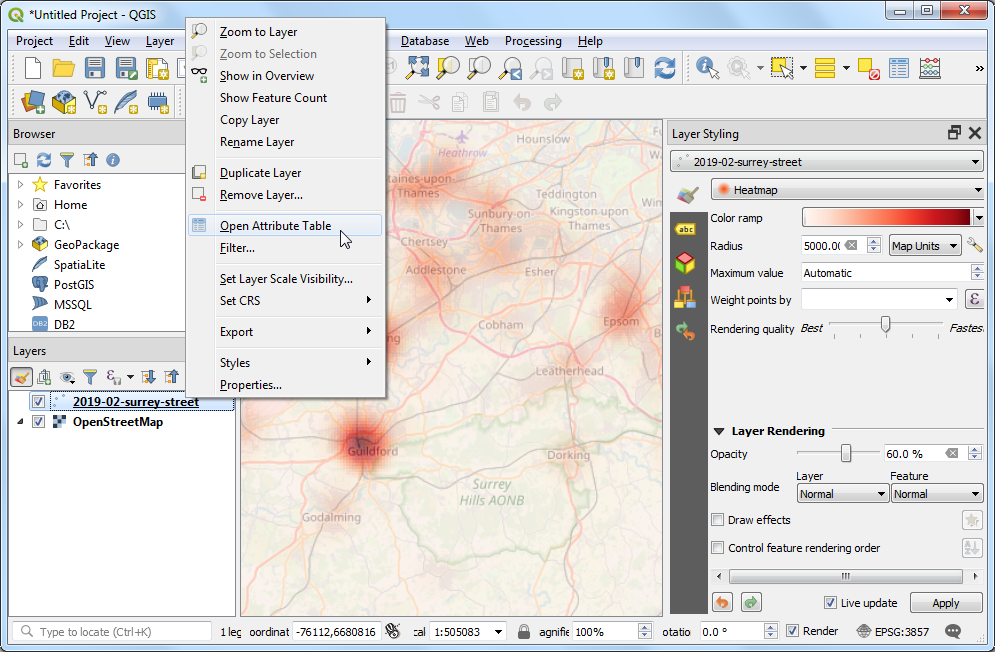
Now the
nationalpark_reprojectedlayer will be loaded in canvas. Right-click theWDPA_WDOECM_Apr2022_Publicc_10744_shp-polygonslayer and select Remove Layer... to remove it. Now we will reproject the raster layer. In the Processing Toolbox, search and locate

In the Warp (Reproject) dialog choose
worldcover_clippedas the Input layer, selectWGS 84 / UTM zone 46NCRS in Target CRS. Open the Advanced Parameters and chooseHigh Compressionin Profile.

Now under Reprojected, click on
...and select Save To File.... Enter the name asworldcover_reprojected.tif. Click Run.
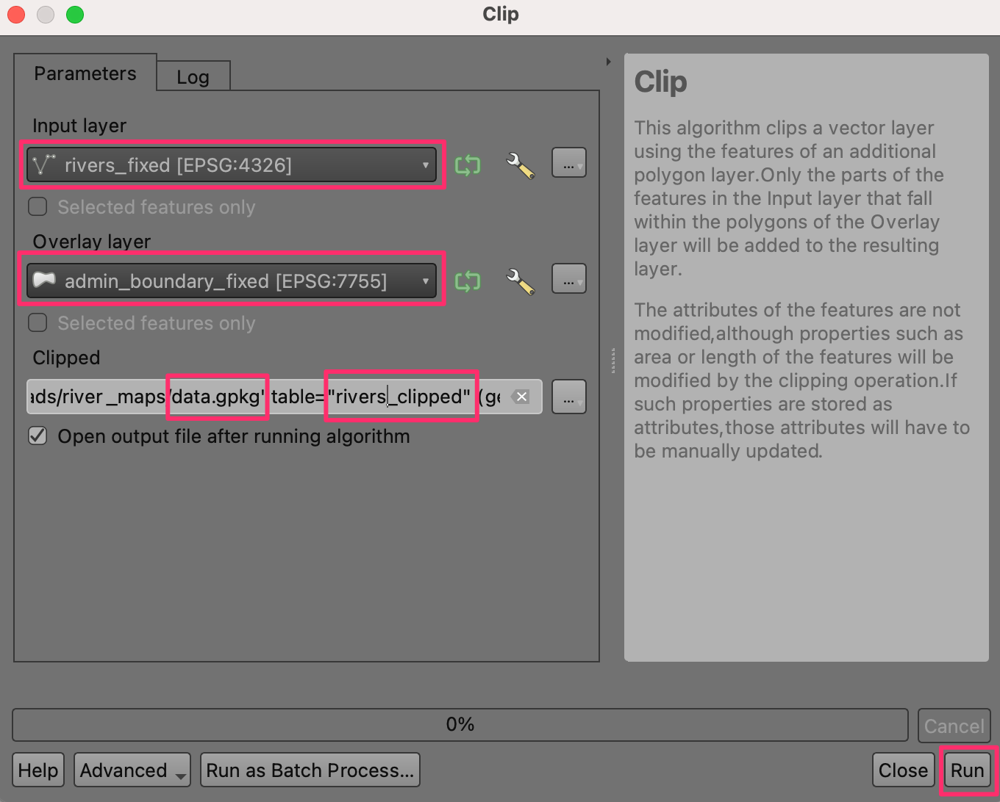
Now the
worldcover_reprojectedlayer will be loaded in the canvas, remove theworldcover_clippedlayer. Let's set the project layer to the UTM zone. Click on any layer and choose .
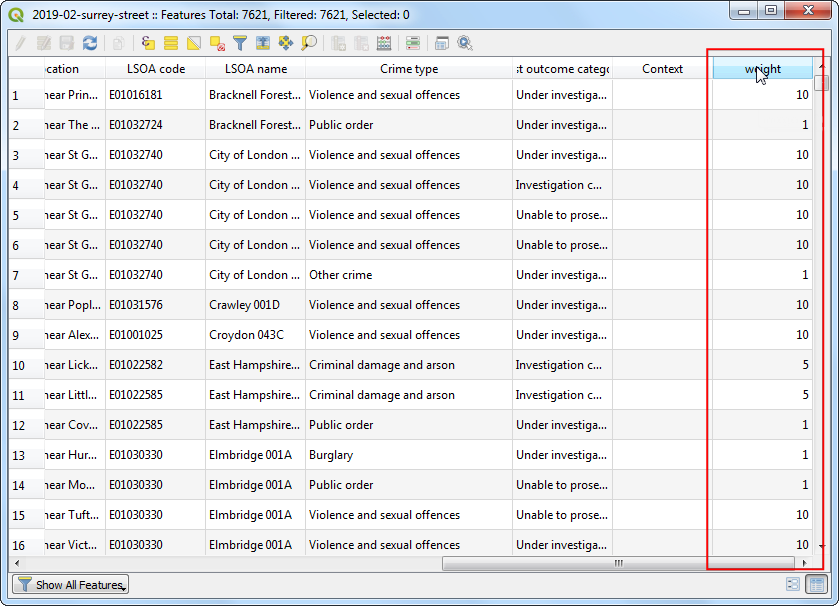
Now the project CRS will be updated. Let's set the symbology of the raster layer as per the class names and colors of the ESA WorldCover dataset. Right-click on the
worldcover_reprojectedlayer and click Properties...
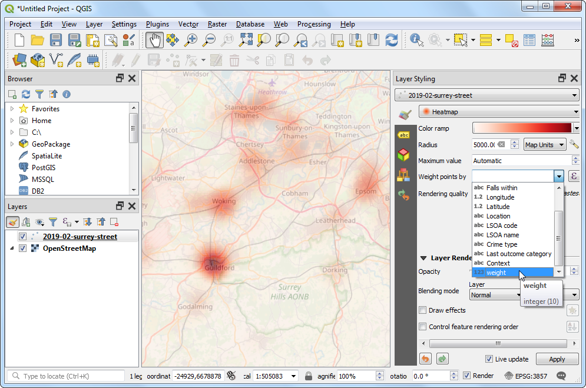
In the Layer Properties dialog, choose Symbology. You can notice the Layer colors are visualized in a white-black tone. To fix this, click on the . Browse and select the
ESAWorldCover_ColorLegend.qmlfile.

Now you can see the updated symbol colors and class descriptions. Click OK.

Expand the
worldcover_reprojectedlayer in the Layers panel to see the legend with correct class descriptions.

Now let's calculate the area for each class. In the processing toolbox, search and locate the Raster layer unique values report tool. Double-click to open it.

In the Raster Layer Unique Values Report dialog, choose the Input layer as
worldcover_reprojected. Under the Unique values table click on...and choose Save to File.... Enter the name asclass_areas.gpkg. Click Run.

Now the
class_areaslayer will be added to the Layers panel. Right-click on the layer and click Open Attribute Table. The columnm2contains the area for each class in square meters.
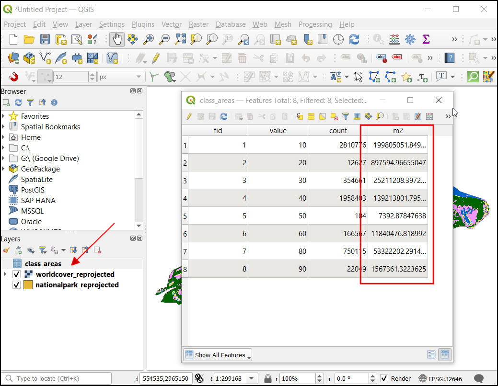
Let's convert the area to square kilometers. In the Processing Toolbox, search and select .

In the Field Calculator dialog, select the
class_areaslayer in the Input Layer. Enter the Field name asarea_sqkm. In the Result field type chooseFloat. In the Expression window, enter the below expression. This will convert the sqmt to sqkm and round the result to 2 decimal places. Under the Calculated click on...and choose Save To File... . Enter the name asclass_area_sqkm.gpkg. Click Run.
round("m2"/ 1e6, 2)
Now the
class_area_sqkmlayer will be loaded in canvas. Open the Attribute table and examine the newly added area_sqkm column. You will notice that the Value column contains numbers for each class. To make the results easier to interpret, Let's also add the description for each class number. The class descriptions are available in the ESA Product User Manual.

Open Field Calculator, and select the
class_areas_sqkmlayer in Input Layer. Enter the Field name aslandcover, in the Result field type, chooseString. In the Expression window enter the below expression. This expression uses the CASE statement to assign a value based on multiple conditions. Under the Calculated click on...and choose Save To File... . Enter the name asclass_area_with_landcover.gpkg. Click Run.
CASE WHEN "value" = 10 THEN 'Tree cover' WHEN "value" = 20 THEN 'Shrubland' WHEN "value" = 30 THEN 'Grassland' WHEN "value" = 40 THEN 'Cropland' WHEN "value" = 50 THEN 'Built-up' WHEN "value" = 60 THEN 'Bare / sparse vegetation' WHEN "value" = 70 THEN 'Snow and Ice' WHEN "value" = 80 THEN 'Permanent water bodies' WHEN "value" = 90 THEN 'Herbaceous wetland' WHEN "value" = 95 THEN 'Mangroves' WHEN "value" = 100 THEN 'Moss and lichen' END
Now the
class_area_with_landcoverlayer will be loaded in canvas. Open the Attribute table. The landcover column will contain the landcover name against each landcover value.
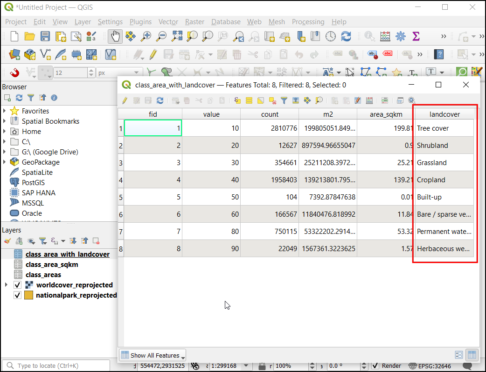
Let's export this result as an excel file. Before export we will also organize the table and remove unwanted fields. In the Processing Toolbox, search and select .

In the Refactor Fields dialog, select the
class_area_with_landcoverlayer in the Input Layer. Select all columns except area_sqkm and landcover, then click Delete selected field.

You can also change the order of fields in the table using the Move Selected Fields button. Once you are done with the edits, click on the
...button next to Refactored and choose Save To File.... SelectXLSX Files (*.xlsx)as the format. Enter the file name aspark_area_by_landcover.xlsxand click Save. In the Refactor Fields dialog, click Run to apply your changes.

The result will be a spreadheet with landcover and area_sqkm columns.
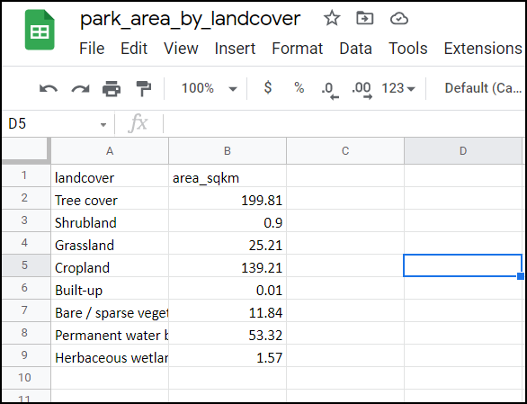
If you want to give feedback or share your experience with this tutorial, please comment below. (requires GitHub account)